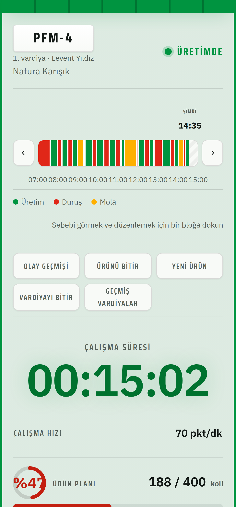
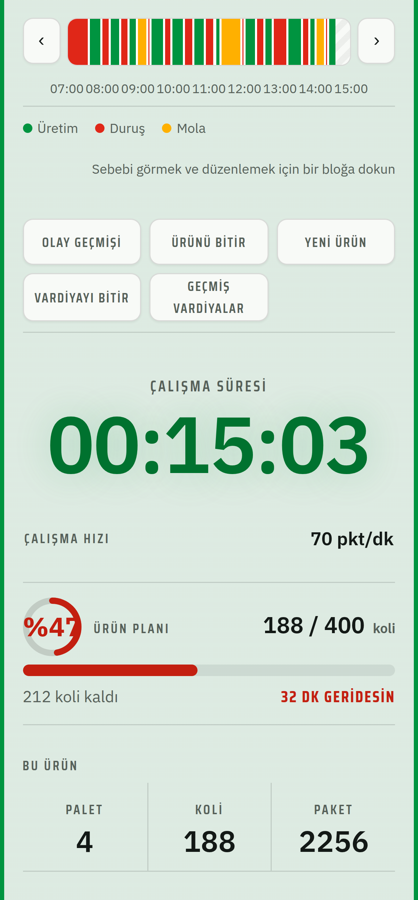
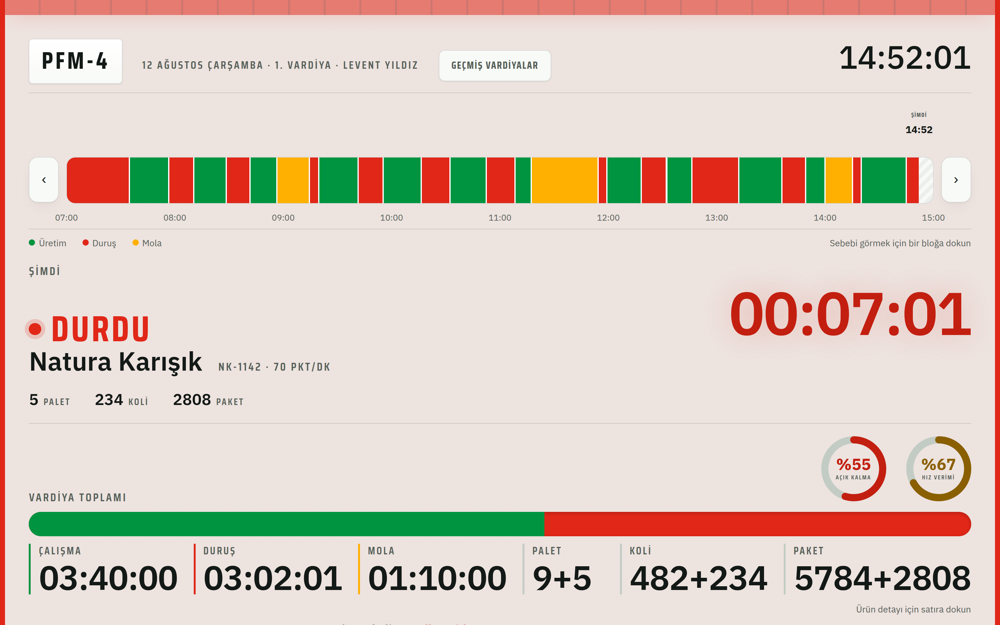

Operatörün ve müdürün gördüğü ekranlardan, bunları ayakta
tutan üç servise: GitHub, Vercel, Supabase.
Sahadaki ekran
Ekran görüntüleri örnek vardiya verisiyle alınmıştır.


Yönetim görünümü

Sahne arkası
Üçü de hazır, dışarıdan kullanılan servisler — bu proje için sıfırdan sunucu kurulmadı.
Uygulamanın tüm kaynak kodu burada tutuluyor, kimin ne zaman değiştirdiğiyle birlikte.
GitHub'daki koda her değişiklik geldiğinde, siteyi otomatik olarak yeniden derleyip yayınlıyor.
Vardiya, ürün, duruş, palet — tüm veri burada; bir değişiklik anında açık olan tüm ekranlara yansıyor.
Basitçe
Kod deposu
Yayın
Veritabanı
Baştan sona
Kod tarafı — bir değişiklik yayına çıkarken
Kullanım tarafı — operatör bir tuşa basınca
Özetle